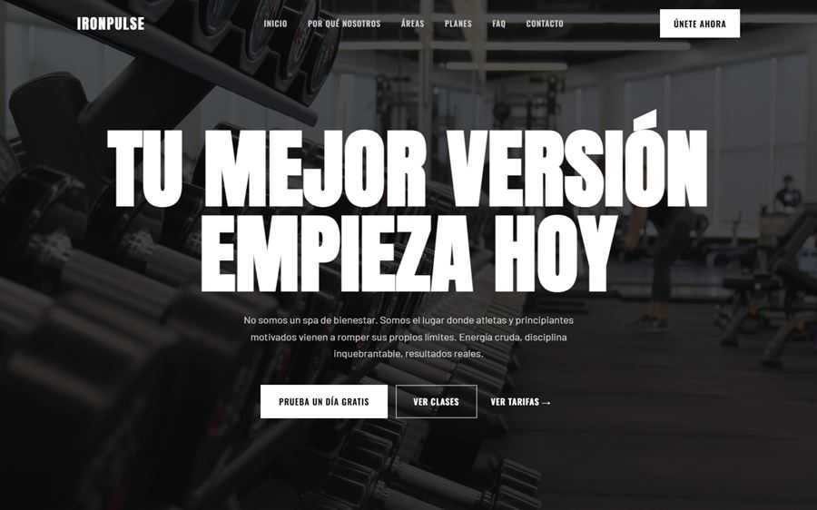

1. La primera pantalla del móvil
Abre tu web en el móvil y no toques nada. Lo que ves sin hacer scroll es lo único que ve mucha gente antes de decidir.
- Se entiende qué haces y dónde. "Panadería en Tolosa" gana a "Pasión por lo artesano desde siempre".
- Hay una acción clara. Llamar, reservar, pedir presupuesto o escribir por WhatsApp. Una, bien visible.
- Carga en menos de tres segundos con los datos del móvil, no con el wifi de casa.
- El texto se lee sin hacer zoom y los botones se pulsan con el dedo sin acertar al de al lado.
2. Contacto y ubicación
- El teléfono se pulsa y llama. Compruébalo tú mismo.
- Horario actualizado, incluidos festivos y vacaciones. Un horario viejo es una visita que se encuentra la persiana bajada y no vuelve.
- Dirección con enlace a Google Maps y, si hace falta, cómo aparcar.
- El mismo nombre, dirección y teléfono que en tu ficha de Google Business. Si no coinciden, Google desconfía.
3. Lo que mira Google
- Cada página tiene su título con lo que haces y dónde. Busca tu web en Google y mira qué pone en azul.
- La web tiene https (el candado junto a la dirección). Sin él, el navegador avisa de que "no es segura".
- Hay texto de verdad, no solo fotos. Google lee texto: si todo está dentro de imágenes, no sabe de qué va tu negocio.
- Tu ficha de Google Business está completa y verificada. Para un negocio local pesa tanto como la web. Guía completa en Google Business Profile, bien puesta.

4. Lo que genera confianza
- Fotos reales del local, del equipo y del trabajo. Las de banco de imágenes se reconocen enseguida.
- Precios, aunque sean orientativos. "Desde 25 €" responde la pregunta que todos se hacen y nadie quiere llamar para hacer.
- Reseñas o testimonios reales, con nombre. Nunca inventados: se nota y Google lo castiga.
5. Lo legal (que casi todos olvidan)
Una web de negocio en España tiene que tener un aviso legal con los datos del titular, una política de privacidad si recoge datos (un formulario ya cuenta) y un aviso de cookies si usa cookies que no son técnicas, como las de analítica o publicidad. No es burocracia opcional: es lo primero que se revisa si hay una reclamación.
Los errores que más clientes cuestan
| Error | Qué pasa | Arreglo |
|---|---|---|
| Carta o tarifas en PDF | En el móvil no se lee y Google apenas lo aprovecha | Pasarlo a texto en la propia web |
| Formulario que nadie mira | El cliente escribe, no recibe respuesta y llama a otro | Que llegue al correo o WhatsApp que usas de verdad |
| Web hecha solo para ordenador | La mayoría de visitas son desde el móvil | Diseñar primero para el móvil |
| Última noticia de hace tres años | Parece que el negocio ha cerrado | Quitar la sección o mantenerla viva |

"Haz esta prueba hoy: pídele a alguien que no conozca tu negocio que encuentre en tu web el teléfono y el horario desde su móvil. Cronométralo. Si tarda más de diez segundos, ya sabes por dónde empezar."
¿Quieres que revise tu web?
Te digo qué falla y qué arreglaría primero, gratis y sin compromiso.
Preguntas frecuentes
¿Qué es lo más importante en la web de un negocio local?
Que en la primera pantalla del móvil se entienda qué haces, dónde estás y cómo contactarte con un solo toque. Todo lo demás viene después.
¿Cuánto debe tardar en cargar una web?
Como referencia, menos de tres segundos en un móvil con datos. Cada segundo de más hace que se vaya una parte de las visitas antes de ver nada.
¿Es obligatorio el aviso legal en una web de negocio?
Sí. En España una web de un negocio debe identificar a su titular con un aviso legal, y si recoge datos personales, por ejemplo con un formulario, necesita también una política de privacidad.
¿Cada cuánto hay que actualizar la web?
Horarios, precios y servicios, en cuanto cambian. El diseño completo, cada varios años o cuando deja de representar al negocio.
Sigue leyendo: cómo aparecer en Google cuando buscan tu negocio, qué dominio elegir y cuánto cuesta una web profesional. O mira las webs que ya tengo publicadas.